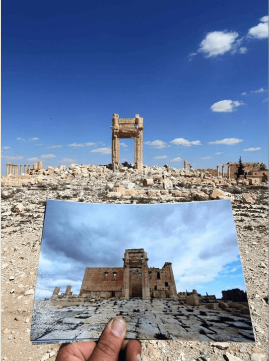

The systematic exploration of Wikidata and DBpedia revealed significant omissions regarding the contemporary state of Palmyra's heritage. While these Knowledge Graphs (KGs) excel at documenting historical facts and geographical coordinates, they struggle to capture the dynamic nature of heritage in post-conflict scenarios, particularly the nuanced concept of Composite Authenticity.
A primary discovery during the methodology phase was the complete absence of the term "Composite Authenticity" within the structured vocabularies of Wikidata and DBpedia. While the site is correctly identified as a "World Heritage Site in Danger," there are no predicates to describe the specific dimensions of its current state.
To verify this gap, we executed an ASK query to test if the specific authenticity property exists in the Wikidata ontology for Palmyra.
PREFIX wd: <http://www.wikidata.org/entity/>
PREFIX wdt: <http://www.wikidata.org/prop/direct/>
ASK
WHERE {
wd:Q5747 ?property "Composite Authenticity" .
}
Result: NO (False)
The KG fails to distinguish between original Roman masonry and modern restoration materials, a distinction that is crucial for heritage professionals and researchers assessing the site's integrity.
Restoration efforts at Palmyra are documented in academic journals and news reports, but this information has not been serialized into RDF format. For example, the reconstruction of the Lion of Al-lāt involves complex international cooperation (UNESCO, DGAM, Polish archaeologists), yet the KG does not link these actors to the specific restoration events.
PREFIX wd: <http://www.wikidata.org/entity/>
PREFIX wdt: <http://www.wikidata.org/prop/direct/>
SELECT ?actor ?actorLabel
WHERE {
wd:Q324314 ?property ?actor . # Temple of Bel
FILTER(REGEX(str(?property), "restor|reconstruct", "i"))
SERVICE wikibase:label { bd:serviceParam wikibase:language "en". }
}
Result: Empty (No restoration actors found)
Specific methods like Anastylosis are mentioned in Wikipedia text but lack corresponding properties in the DBpedia ontology for the Palmyra entities.
The Knowledge Graphs represent Palmyra in a static state or provide a single "destroyed" status. There is no temporal modeling that tracks the evolution from Material Authenticity (pre-2015) to Digital Authenticity (documentation phase) and finally to Composite Authenticity (restored state).

Figure 3: Visual documentation of the site's transformation, which lacks a structured temporal counterpart in KGs.
Authenticity is not just material; it is also experiential. Current KGs do not include data about visitor perception, local community attachment, or the "spirit of place" (Genius Loci) which are essential components of the Palmyra heritage experience.
By identifying these four critical gaps, this project sets the stage for using Large Language Models to extract the missing information and convert it into structured RDF Triples, thereby enriching the global heritage knowledge base.